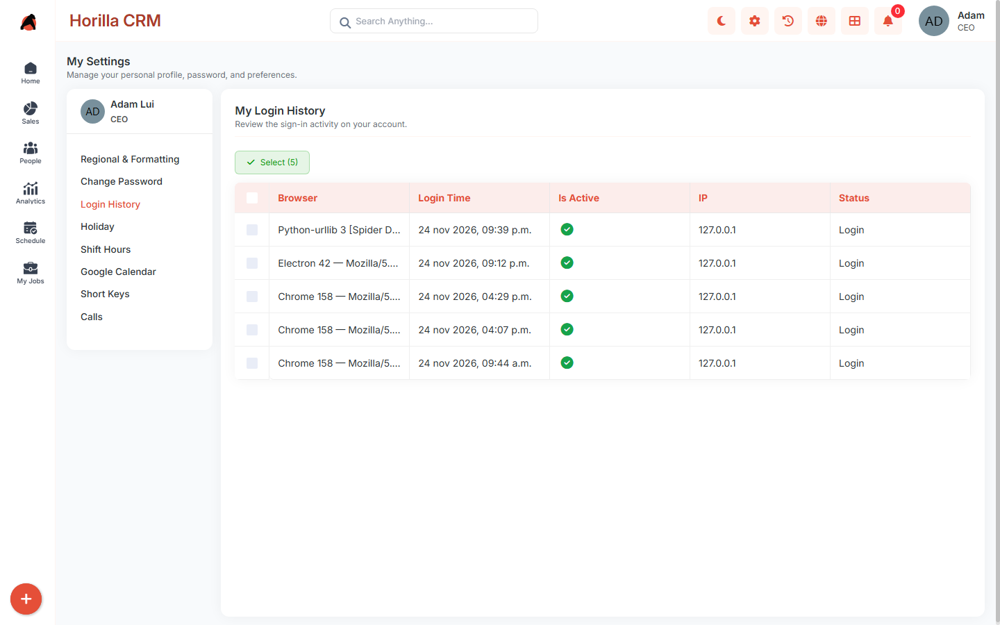

Introduction
The Login History module gives you complete visibility of your own login activity. It records session events together with the device, browser and IP address used, so that access is transparent, secure and accountable. From here you can review your access history, follow which sessions are still active and export the records for analysis or for compliance reporting.

Key Features and Functionalities
1.1 Login History Overview
Purpose: provide a central dashboard of your login activity for monitoring and tracking.
Go to My Settings → Login History to open it. Each record shows:
- Browser – the browser used for the session.
- Login Time – when the session started.
- IP Address – the address the login came from.
- Active Status – whether the session is still live.
- Login/Logout status – the event recorded for the session.
Green and red indicators make it easy to tell at a glance whether a session is active or inactive.
1.2 Session Management
Purpose: monitor and manage your current and past sessions.
- Active sessions are highlighted so that they stand out in the list.
- All login and logout events are listed in chronological order.
1.3 Export Functionality
Purpose: produce reports of login activity in different file formats.
- Records can be exported as CSV, Excel or PDF.
- Multi-select checkboxes let you export several sessions in one go.
- This supports compliance and reporting requirements.